信義區大概是台北最有耶誕氣氛的地區啦！
要拍漂釀的 聖誕樹當然不能錯過這個好地點～
聖誕樹當然不能錯過這個好地點～
趁耶誕節前夕人還不多帶卡卡去感受一下！
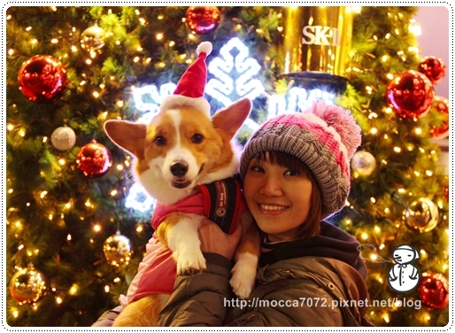
花旗銀行的白色聖誕樹，晚上點燈也很美！
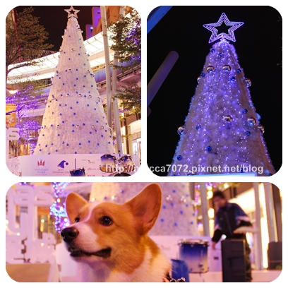
ㄟ思Ｋ吐的聖誕樹非常華麗亮眼！
聚集超多人在拍照，要搶個位子好好拍還真難！.gif")
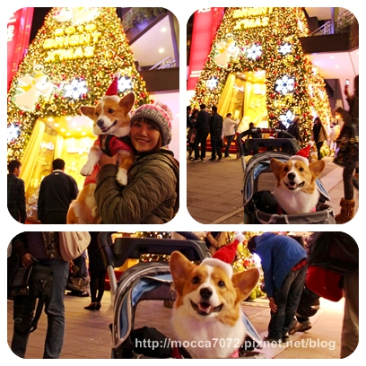
抬頭可以看到像星星一樣的小燈飾，還舖上長長的藍色多益得地毯!? 哈哈哈
摩卡卡戴上麻麻超大球毛帽，在廣場胡亂奔跑的～超開心！
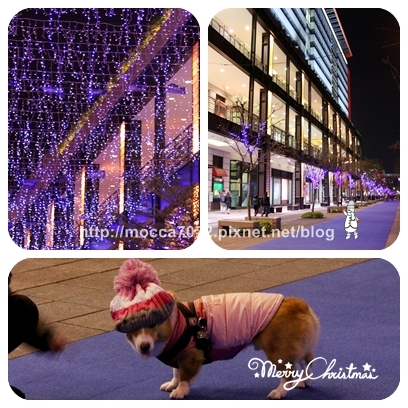
跟我媽最愛的ＳＮＯＯＰＹ拍拍！
洗出來送給阿嬤當生日禮物！？ XDDDDDD
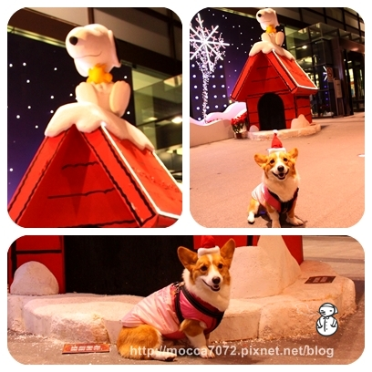
還聽了美女姐結－曼青的爵士鼓表演！超厲害！
我說女生打鼓真的超帥氣的，還會甩鼓棒！花式耶～
既然是漂亮女生，當然投錢也都是男生居多！哈哈哈
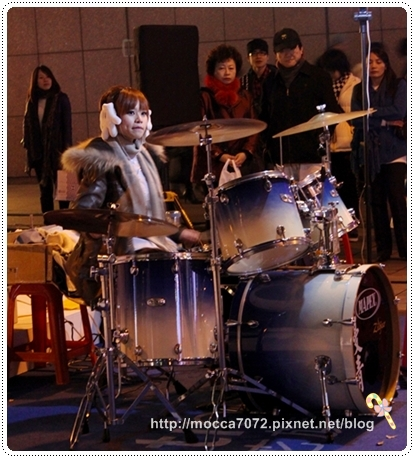
摩卡拔那天怎嘛拍怎嘛不滿意，所以照片就醬！
猛哥明年請加油！不要再Ｘ毛了..........飯輕鬆！
＝＝＝＝＝＝＝＝＝＝＝＝＝＝＝＝＝＝＝＝＝＝＝＝＝＝＝＝＝＝＝＝＝＝＝
聖誕節少不了交換禮物，就像中秋節一定要烤肉一樣！？
有狗的有人的，哦耶！年底真的是破產的好時機啊～～～
想說一次買齊所有禮物，就去了一趟派特芙德，居然就變成了V.I.P.
但也不用太驚訝，要成為他們家VIP一點都不難！很容易破表達陣滴
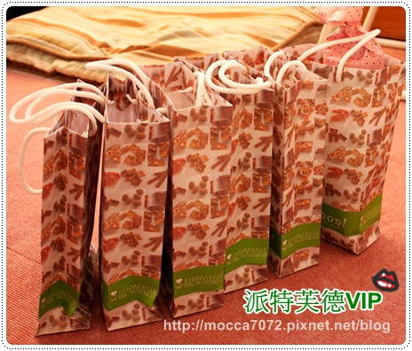
用了禮物盒裝的米丸子，看起來更高級惹！？
其他的因為包裝好才想到要拍照，哈哈哈！所以就由收到禮物的人公佈嘍！
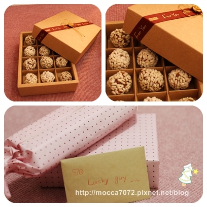
為了寫卡片還敗了和紙膠帶，真是有夠不便宜～！
不過這我想買很久了，乾脆一次荷包傷到底！衝了～
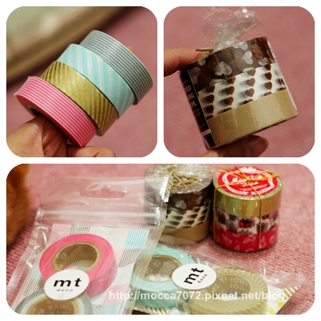
傭懶的貴婦卡卡，定焦鏡下拍出的深邃的明眸！
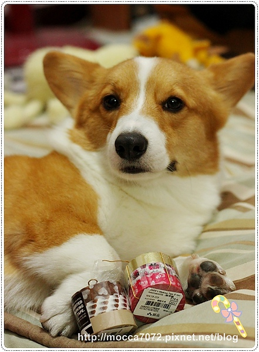
呃.......這已經不是單純的頂頂了，根本是置物櫃！
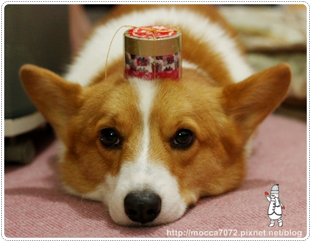
八百年沒寫卡片了，卡片寫到詞窮！XD
雖然內容八股，我還是用心的在寫吶！希望收到的捧油鼻要嫌棄
我可是趴在地上寫很久，因為桌子被雜物佔滿惹！！
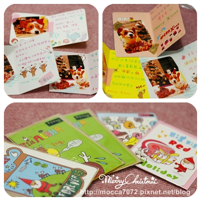
精選出三款摩卡卡的聖誕節可愛照片貼在卡片上！
用卡卡可可愛的大頭獻上最溫暖的祝福~~
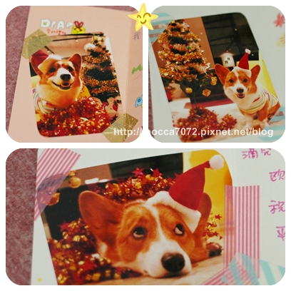
摩卡卡希望泥一直相信有聖誕老公公的存在呦！
 聖誕節快樂～麻咪的乖寶寶
聖誕節快樂～麻咪的乖寶寶
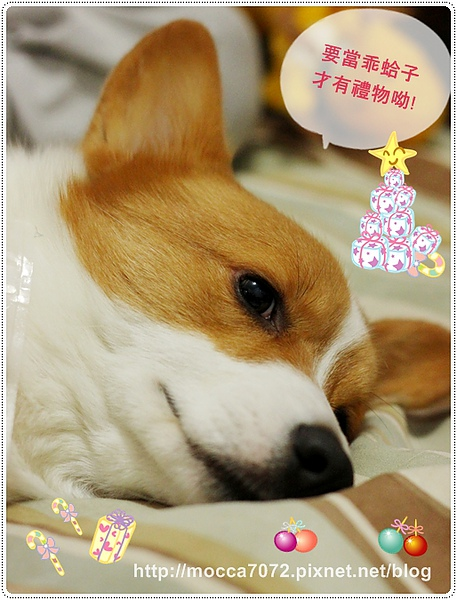